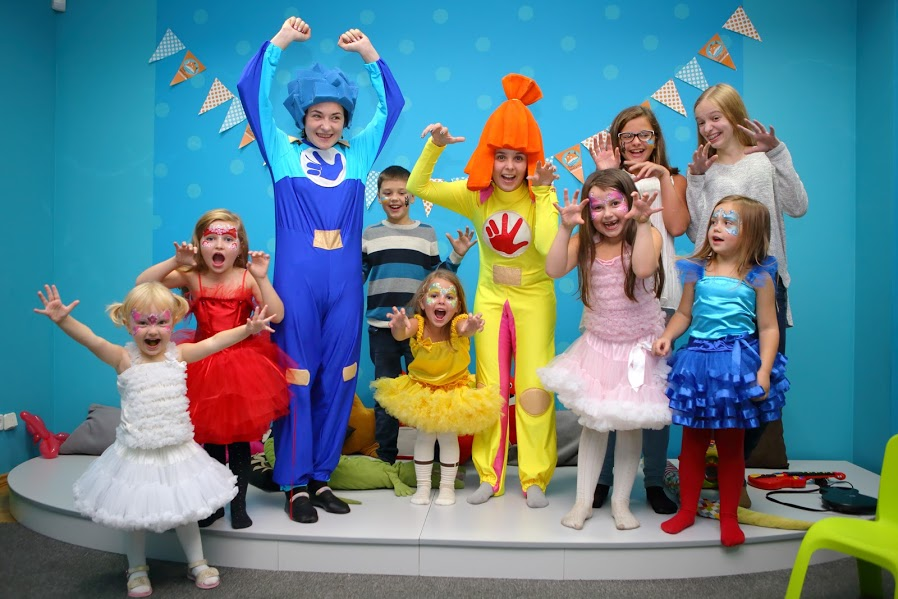

AyA Organizasyon
AyA Organizasyon, çocuk organizasyonları konusunda da uzmanlaşmış bir organizasyon firmasıdır. Çocukların eğlenceli ve unutulmaz anlar yaşaması için özel olarak tasarlanmış etkinlikler sunarlar.
Çocuk organizasyonları, doğum günü partileri, okul etkinlikleri, festivaller, bayram etkinlikleri, çocuk etkinlik merkezleri gibi çeşitli platformlarda gerçekleştirilebilir. AyA Organizasyon, bu tür etkinliklerde çocukların ilgi alanlarını ve yaş gruplarını dikkate alarak özgün ve eğlenceli etkinlikler sunar.
Doğum günü partileri, çocuk organizasyonlarının en popüler türlerinden biridir. AyA Organizasyon, doğum günü partilerini çocuğun yaşına, ilgi alanlarına ve tema tercihlerine göre kişiselleştirir. Parti mekanının dekorasyonu, temaya uygun aksesuarlar ve balonlarla süslenir. Etkinlikler arasında oyunlar, dans gösterileri, yüz boyama, balon süsleme, kukla gösterileri ve mini sahne performansları gibi etkinlikler yer alır.
Okul etkinlikleri, çocukların sosyal becerilerini geliştirmek ve eğitici deneyimler yaşamak için önemli bir platformdur. AyA Organizasyon, okul etkinliklerinde eğlenceli atölye çalışmaları, oyunlar ve yaratıcı aktiviteler düzenler. Bilimsel deneyler, sanatsal etkinlikler, müzik ve dans atölyeleri gibi etkinlikler çocukların öğrenirken eğlenmelerini sağlar.
Festivaller ve bayram etkinlikleri, çocukların bayram coşkusunu doyasıya yaşadığı özel zamanlardır. AyA Organizasyon, bu tür etkinliklerde çocuklar için interaktif oyun alanları, eğlence parkurları, mini konserler ve performanslar düzenler. Ayrıca, yüz boyama, palyaço gösterileri, pandomim, sihirbazlık gibi etkinliklerle çocukların keyifli bir gün geçirmesini sağlar.
Çocuk etkinlik merkezleri ise çocukların oyun ve eğlence dolu bir ortamda zaman geçirebilecekleri mekanlardır. AyA Organizasyon, çocuk etkinlik merkezlerinde etkileyici dekorasyonlar, oyun alanları, etkinlikler ve eğlence programları sunar. Bu merkezlerde çocuklar, güvenli bir ortamda arkadaşlarıyla oyun oynayabilir, yaratıcılıklarını keşfedebilir ve eğlenceli etkinliklere katılabilir.
AyA Organizasyon, çocuk organizasyonlarında güvenlik ve eğlenceyi bir arada sunmayı hedefler. Deneyimli animatörler ve organizatörler, etkinliklerin her aşamasını dikkatle planlar ve yönetir. Çocukların güvenliği ve mutluluğu en ön planda tutularak, unutulmaz anılar yaratılır.
Sonuç olarak, AyA Organizasyon çocuk organizasyonları konusunda uzmanlaşmış bir organizasyon firmasıdır. Doğum günü partileri, okul etkinlikleri, festivaller ve çocuk etkinlik merkezleri gibi çeşitli platformlarda çocukların eğlenceli ve unutulmaz deneyimler yaşamasını sağlar. Profesyonel ekip ve özgün etkinliklerle AyA Organizasyon, çocukların hayal dünyasını renklendirir ve mutlu anılar bırakır.
